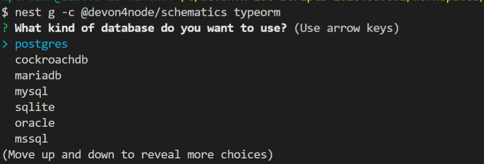
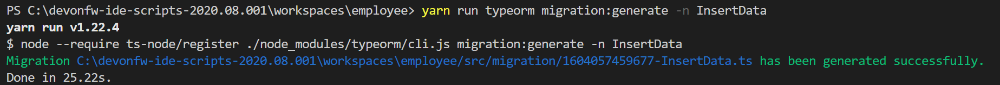

- Code Generation
- Nest CLI and Devon4node schematics
- Install devon4node schematics
- ==
- Generate new devon4node application
- Generate code for TypeORM
- Generate CRUD
- Generate TypeORM entity
- Add config-module
- Add mailer module
- Add swagger module
- Add auth-jwt module
- Add security
- Generate database migrations
- CobiGen
Code Generation
As we mention in the page key principles, one of our key principles is Productivity. In order to provide that productivity, we have some tools to generate code. These tools will help you generate the common parts of the application so that you can focus only on the specific functionality.
Those tools are:
Nest CLI and Devon4node schematics
We are going to use the Nest CLI to generate code of our application, you can know more about NodeJs CLI in the official documentation.
Install devon4node schematics
First of all, you need to install Nest CLI
Execute the command yarn global add @nestjs/cli.
You can also use npm: npm install -g @nestjs/cli
And then Devon4node schematics globally with the following command:
yarn global add @devon4node/schematics or npm install -g @devon4node/schematics
==
If you get an error trying execute any devon4node schematic related to collection not found, try to reinstall devon4node/schematics on the project folder or be sure that schematics folder is inside @devon4node in node_modules.
yarn add @devon4node/schematics
== ==
Generate new devon4node application
To start creating a devon4node application, execute the command:
nest g -c @devon4node/schematics application [application-name]
If you do not put a name, the command line will ask you for one.
Generate code for TypeORM
Initialize TypeORM into your current project in a correct way.
nest g -c @devon4node/schematics typeorm
Then, you will be asked about which DB you want to use.

Generate CRUD
Generate CRUD methods for a entity. Requires TypeORM installed in the project.
It will add the @nestjsx/crud module as a project dependency. Then, generates an entity, a CRUD controller and a CRUD service. It also register the entity, controller and service in the module.
Execute nest g -c @devon4node/schematics crud and then you will need to write a name for the crud.
Generate TypeORM entity
Add a TypeORM entity to your project. Requires TypeORM installed in the project.
Execute nest g -c @devon4node/schematics entity and you will be asked for an entity name.
Add config-module
Add the config module to the project.
It will add the @devon4node/common module as a project dependency. Then, it will generate the configuration module into your project and add it in the core module. Also, it generates the config files for the most common environments.
The command to execute will be nest g -c @devon4node/schematics config-module
Add mailer module
Add @devon4node/mailer module to project.
It will add the @devon4node/mailer module as a project dependency. Also, it will add it to the core module and it will generate some email template examples.
Write the command nest g -c @devon4node/schematics mailer
Add swagger module
Add swagger module to project.
It will add the @nestjs/swagger module as a project dependency. Also, it will update the main.ts file in order to expose the endpoint for swagger. The default endpoint is: /v1/api
Execute the command nest g -c @devon4node/schematics swagger
Add auth-jwt module
Add the auth JWT module to the project.
It will add to your project the auth-jwt and user module. Also, it will import those modules into the core module.
Execute nest g -c @devon4node/schematics auth-jwt
Add security
Add cors and helmet to your project.
It will add helmet package as project dependency and update the main.ts file in order to enable the cors and helmet in your application.
Execute nest g -c @devon4node/schematics security
Generate database migrations
-
Generate database migrations
-
In order to create migration scripts with TypeORM, you need to install ts-node:
yarn global add ts-nodeornpm i -g ts-node -
Generate the tables creation migration:
yarn run typeorm migration:generate -n CreateTablesIt will connect to the database, read all entities and then it will generate a migration file with all sql queries need to transform the current status of the database to the status defined by the entities. If the database is empty, it will generate all sql queries need to create all tables defined in the entities. You can find a example in the todo example
-
As TypeORM is the tool used for DB. You can check official documentation for more information. See TypeORM CLI documentation.
CobiGen
Currently, we do not have templates to generate devon4node code (we have planned to do that in the future). Instead, we have templates that read the code of a devon4node application and generate a devon4ng application. Visit the CobiGen page for more information.